![]()
install.packages(c("FactoMineR", "factoextra"))Introduction
Factor Analysis of Mixed Data (FAMD) is a powerful statistical technique used to analyze datasets that contain both numerical and categorical variables. It extends traditional factor analysis to handle mixed data types, providing a comprehensive understanding of the underlying structure of complex datasets. In this blog post, we will delve into the essentials of FAMD, exploring its computation, R packages, data format, R code, visualization, and interpretation.
Computation
FAMD combines multiple techniques, such as Principal Component Analysis (PCA) for numerical variables and Multiple Correspondence Analysis (MCA) for categorical variables. The integration of these methods allows FAMD to effectively capture the relationships between variables and reveal underlying patterns in mixed datasets.
R Packages
To perform FAMD in R, the FactoMineR and factoextra package are widely used and offers a dedicated function for FAMD. Ensure that you have the package installed by running:
load packages:
library(FactoMineR)
library(factoextra)Loading required package: ggplot2Welcome! Want to learn more? See two factoextra-related books at https://goo.gl/ve3WBaData Format
Before applying FAMD, it’s crucial to prepare your data appropriately. Ensure that your dataset contains both numerical and categorical variables. Standardize numerical variables if necessary and encode categorical variables properly.
We’ll use a subset of the wine data set available in FactoMineR package:
library("FactoMineR")
data(wine)
df <- wine[,c(1,2, 16, 22, 29, 28, 30,31)]
head(df[, 1:7], 4) Label Soil Plante Acidity Harmony Intensity Overall.quality
2EL Saumur Env1 2.000 2.107 3.143 2.857 3.393
1CHA Saumur Env1 2.000 2.107 2.964 2.893 3.214
1FON Bourgueuil Env1 1.750 2.179 3.143 3.074 3.536
1VAU Chinon Env2 2.304 3.179 2.038 2.462 2.464To see the structure of the data, type this:
str(df)'data.frame': 21 obs. of 8 variables:
$ Label : Factor w/ 3 levels "Saumur","Bourgueuil",..: 1 1 2 3 1 2 2 1 3 1 ...
$ Soil : Factor w/ 4 levels "Reference","Env1",..: 2 2 2 3 1 1 1 2 2 3 ...
$ Plante : num 2 2 1.75 2.3 1.76 ...
$ Acidity : num 2.11 2.11 2.18 3.18 2.57 ...
$ Harmony : num 3.14 2.96 3.14 2.04 3.64 ...
$ Intensity : num 2.86 2.89 3.07 2.46 3.64 ...
$ Overall.quality: num 3.39 3.21 3.54 2.46 3.74 ...
$ Typical : num 3.25 3.04 3.18 2.25 3.44 ...The data contains 21 rows (wines, individuals) and 8 columns (variables):
- The first two columns are factors (
categorical variables):label(Saumur, Bourgueil or Chinon) andsoil(Reference, Env1, Env2 or Env4). - The remaining columns are numeric (
continuous variables).
Tip
The goal of this study is to analyze the characteristics of the wines.
R Code
The function FAMD() [FactoMiner package] can be used to compute FAMD. A simplified format is:
FAMD (base, ncp = 5, sup.var = NULL, ind.sup = NULL, graph = TRUE)base: a data frame with n rows (individuals) and p columns (variables).ncp: the number of dimensions kept in the results (by default 5)sup.var: a vector indicating the indexes of the supplementary variables.ind.sup: a vector indicating the indexes of the supplementary individuals.graph: a logical value. If TRUE a graph is displayed.
To compute FAMD, type this:
library(FactoMineR)
res.famd <- FAMD(df, graph = FALSE)The output of the FAMD() function is a list including:
print(res.famd)*The results are available in the following objects:
name description
1 "$eig" "eigenvalues and inertia"
2 "$var" "Results for the variables"
3 "$ind" "results for the individuals"
4 "$quali.var" "Results for the qualitative variables"
5 "$quanti.var" "Results for the quantitative variables"Visualization and Interpretation
We’ll use the following factoextra functions:
get_eigenvalue(res.famd): Extract the eigenvalues/variances retained by each dimension (axis).fviz_eig(res.famd): Visualize the eigenvalues/variances.get_famd_ind(res.famd): Extract the results for individuals.get_famd_var(res.famd): Extract the results for quantitative and qualitative variables.fviz_famd_ind(res.famd),fviz_famd_var(res.famd): Visualize the results for individuals and variables, respectively.
In the next sections, we’ll illustrate each of these functions.
Tip
To help in the interpretation of FAMD, we highly recommend to read the interpretation of principal component analysis (Chapter (???)(principal-component-analysis)) and multiple correspondence analysis (Chapter (???)(multiple-correspondence-analysis)). Many of the graphs presented here have been already described in our previous chapters.
Eigenvalues / Variances
The proportion of variances retained by the different dimensions (axes) can be extracted using the function get_eigenvalue() [factoextra package] as follow:
library("factoextra")
eig.val <- get_eigenvalue(res.famd)
head(eig.val) eigenvalue variance.percent cumulative.variance.percent
Dim.1 4.8315174 43.922886 43.92289
Dim.2 1.8568797 16.880724 60.80361
Dim.3 1.5824794 14.386176 75.18979
Dim.4 1.1491200 10.446546 85.63633
Dim.5 0.6518053 5.925503 91.56183The function fviz_eig() or fviz_screeplot() [factoextra package] can be used to draw the scree plot (the percentages of inertia explained by each FAMD dimensions):
fviz_screeplot(res.famd)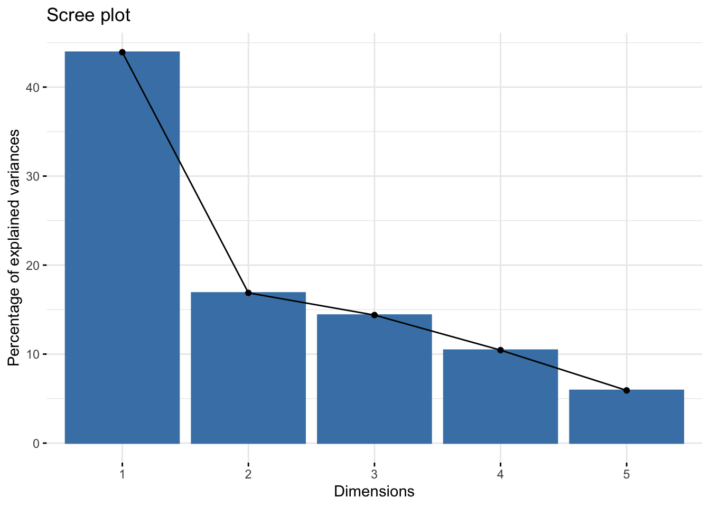
Graph of Variables
All variables
The function get_mfa_var() [in factoextra] is used to extract the results for variables. By default, this function returns a list containing the coordinates, the cos2 and the contribution of all variables:
var <- get_famd_var(res.famd)
varFAMD results for variables
===================================================
Name Description
1 "$coord" "Coordinates"
2 "$cos2" "Cos2, quality of representation"
3 "$contrib" "Contributions" The different components can be accessed as follow:
# Coordinates of variables
head(var$coord) Dim.1 Dim.2 Dim.3 Dim.4 Dim.5
Plante 0.7344160 0.060551966 0.105902048 0.004011299 0.0010340559
Acidity 0.1732738 0.491118153 0.126394029 0.115376784 0.0045862935
Harmony 0.8943968 0.023628146 0.040124469 0.003653813 0.0086624633
Intensity 0.6991811 0.134639254 0.065382234 0.023214984 0.0064730431
Overall.quality 0.9115699 0.005246728 0.009336677 0.005445276 0.0007961880
Typical 0.7808611 0.027094327 0.001549791 0.083446627 0.0005912942# Cos2: quality of representation on the factore map
head(var$cos2) Dim.1 Dim.2 Dim.3 Dim.4 Dim.5
Plante 0.53936692 3.666541e-03 1.121524e-02 1.609052e-05 1.069272e-06
Acidity 0.03002381 2.411970e-01 1.597545e-02 1.331180e-02 2.103409e-05
Harmony 0.79994566 5.582893e-04 1.609973e-03 1.335035e-05 7.503827e-05
Intensity 0.48885427 1.812773e-02 4.274836e-03 5.389355e-04 4.190029e-05
Overall.quality 0.83095973 2.752815e-05 8.717353e-05 2.965103e-05 6.339153e-07
Typical 0.60974400 7.341026e-04 2.401853e-06 6.963340e-03 3.496288e-07# Contributions to the dimensions
head(var$contrib) Dim.1 Dim.2 Dim.3 Dim.4 Dim.5
Plante 15.200526 3.2609526 6.69215972 0.3490757 0.15864490
Acidity 3.586323 26.4485720 7.98708850 10.0404466 0.70362936
Harmony 18.511716 1.2724651 2.53554453 0.3179662 1.32899551
Intensity 14.471254 7.2508336 4.13163258 2.0202401 0.99309457
Overall.quality 18.867156 0.2825562 0.59000304 0.4738648 0.12215119
Typical 16.161818 1.4591321 0.09793437 7.2617850 0.09071638The following figure shows the correlation between variables - both quantitative and qualitative variables - and the principal dimensions, as well as, the contribution of variables to the dimensions 1 and 2. The following functions [in the factoextra package] are used:
fviz_famd_var()to plot both quantitative and qualitative variablesfviz_contrib()to visualize the contribution of variables to the principal dimensions
# Plot of variables
fviz_famd_var(res.famd, repel = TRUE)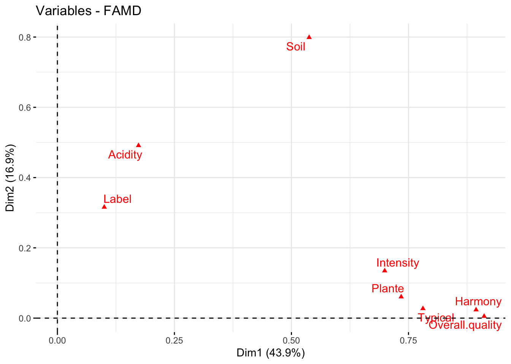
# Contribution to the first dimension
fviz_contrib(res.famd, "var", axes = 1)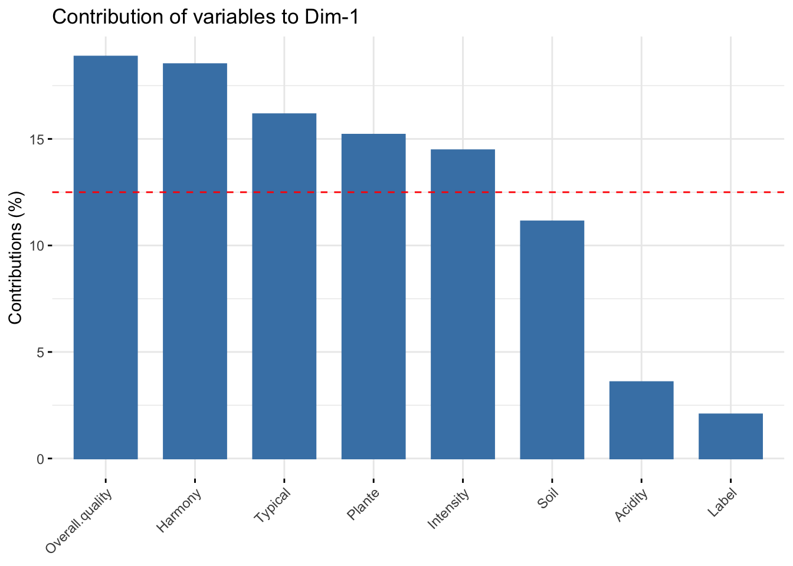
# Contribution to the second dimension
fviz_contrib(res.famd, "var", axes = 2)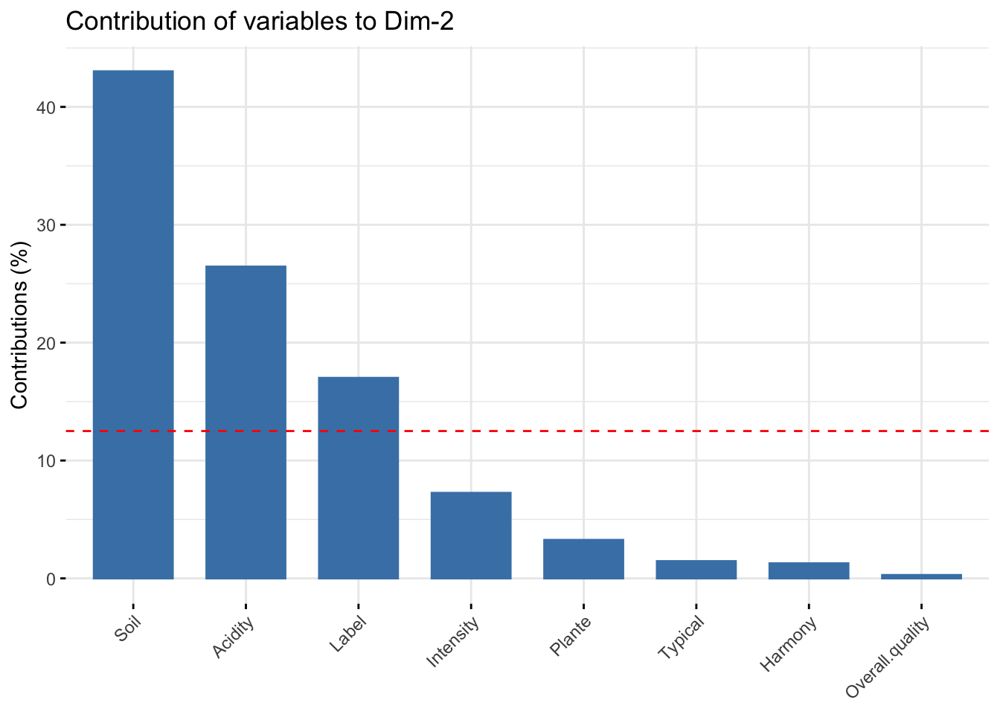
The red dashed line on the graph above indicates the expected average value, If the contributions were uniform. Read more in chapter (Chapter @ref(principal-component-analysis)).
Tip
From the plots above, it can be seen that: - variables that contribute the most to the first dimension are: Overall.quality and Harmony. - variables that contribute the most to the second dimension are: Soil and Acidity.
Quantitative variables
To extract the results for quantitative variables, type this:
quanti.var <- get_famd_var(res.famd, "quanti.var")
quanti.varFAMD results for quantitative variables
===================================================
Name Description
1 "$coord" "Coordinates"
2 "$cos2" "Cos2, quality of representation"
3 "$contrib" "Contributions" In this section, we’ll describe how to visualize quantitative variables. Additionally, we’ll show how to highlight variables according to either i) their quality of representation on the factor map or ii) their contributions to the dimensions.
The R code below plots quantitative variables. We use repel = TRUE, to avoid text overlapping.
fviz_famd_var(res.famd, "quanti.var", repel = TRUE,
col.var = "black")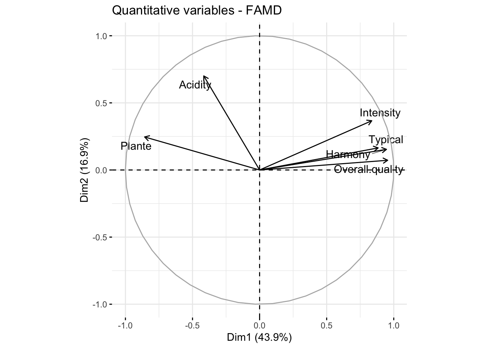
Briefly, the graph of variables (correlation circle) shows the relationship between variables, the quality of the representation of variables, as well as, the correlation between variables and the dimensions. Read more at PCA (Chapter @ref(principal-component-analysis)), MCA (Chapter @ref(multiple-correspondence-analysis)) and MFA (Chapter @ref(multiple-factor-analysis)).
The most contributing quantitative variables can be highlighted on the scatter plot using the argument col.var = "contrib". This produces a gradient colors, which can be customized using the argument gradient.cols.
fviz_famd_var(res.famd, "quanti.var", col.var = "contrib",
gradient.cols = c("#00AFBB", "#E7B800", "#FC4E07"),
repel = TRUE)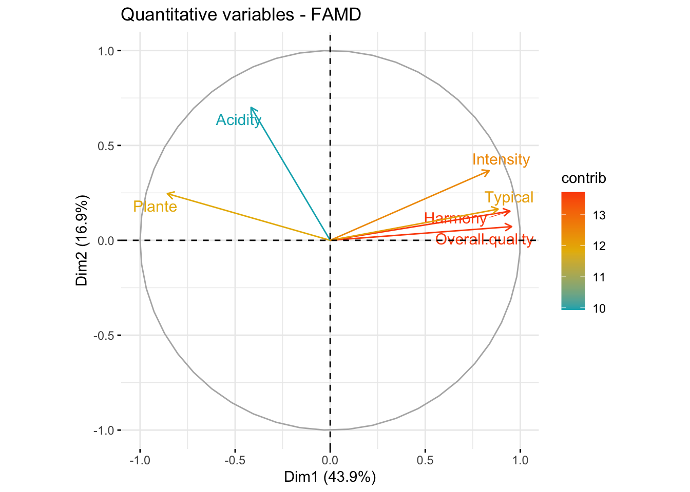
Similarly, you can highlight quantitative variables using their cos2 values representing the quality of representation on the factor map. If a variable is well represented by two dimensions, the sum of the cos2 is closed to one. For some of the items, more than 2 dimensions might be required to perfectly represent the data.
# Color by cos2 values: quality on the factor map
fviz_famd_var(res.famd, "quanti.var", col.var = "cos2",
gradient.cols = c("#00AFBB", "#E7B800", "#FC4E07"),
repel = TRUE)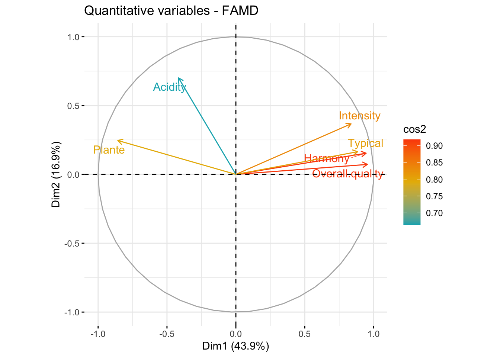
Graph of qualitative variables
Like quantitative variables, the results for qualitative variables can be extracted as follow:
quali.var <- get_famd_var(res.famd, "quali.var")
quali.varFAMD results for qualitative variable categories
===================================================
Name Description
1 "$coord" "Coordinates"
2 "$cos2" "Cos2, quality of representation"
3 "$contrib" "Contributions" To visualize qualitative variables, type this:
fviz_famd_var(res.famd, "quali.var", col.var = "contrib",
gradient.cols = c("#00AFBB", "#E7B800", "#FC4E07")
)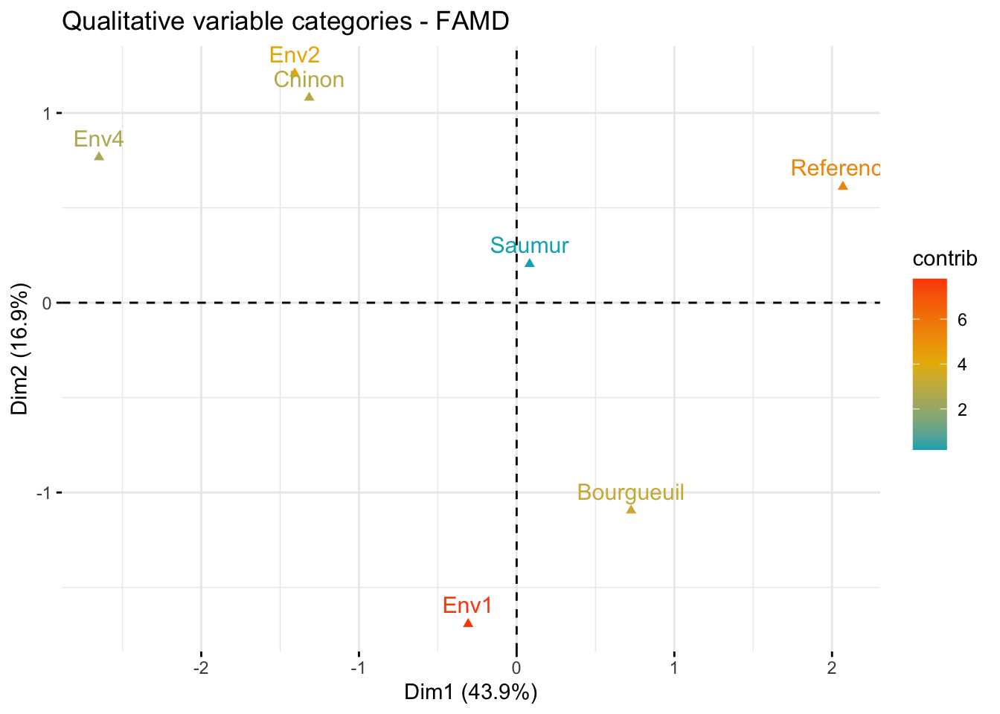
The plot above shows the categories of the categorical variables.
Graph of individuals
To get the results for individuals, type this:
ind <- get_famd_ind(res.famd)
indFAMD results for individuals
===================================================
Name Description
1 "$coord" "Coordinates"
2 "$cos2" "Cos2, quality of representation"
3 "$contrib" "Contributions" To plot individuals, use the function fviz_mfa_ind() [in factoextra]. By default, individuals are colored in blue. However, like variables, it’s also possible to color individuals by their cos2 and contribution values:
fviz_famd_ind(res.famd, col.ind = "cos2",
gradient.cols = c("#00AFBB", "#E7B800", "#FC4E07"),
repel = TRUE)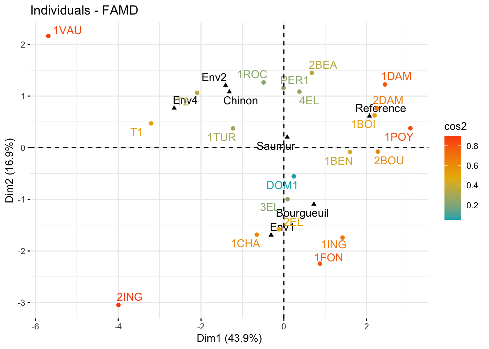
Tip
In the plot above, the qualitative variable categories are shown in black. Env1, Env2, Env3 are the categories of the soil. Saumur, Bourgueuil and Chinon are the categories of the wine Label. If you don’t want to show them on the plot, use the argument invisible = "quali.var".
Individuals with similar profiles are close to each other on the factor map. For the interpretation, read more at Chapter @ref(multiple-correspondence-analysis) (MCA) and Chapter @ref(multiple-factor-analysis) (MFA).
Note that, it’s possible to color the individuals using any of the qualitative variables in the initial data table. To do this, the argument habillage is used in the fviz_famd_ind() function. For example, if you want to color the wines according to the supplementary qualitative variable “Label”, type this:
fviz_mfa_ind(res.famd,
habillage = "Label", # color by groups
palette = c("#00AFBB", "#E7B800", "#FC4E07"),
addEllipses = TRUE, ellipse.type = "confidence",
repel = TRUE # Avoid text overlapping
) 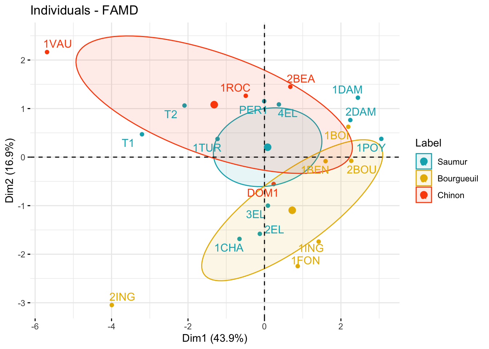
If you want to color individuals using multiple categorical variables at the same time, use the function fviz_ellipses() [in factoextra] as follow:
fviz_ellipses(res.famd, c("Label", "Soil"), repel = TRUE)Warning: `gather_()` was deprecated in tidyr 1.2.0.
ℹ Please use `gather()` instead.
ℹ The deprecated feature was likely used in the factoextra package.
Please report the issue at <https://github.com/kassambara/factoextra/issues>.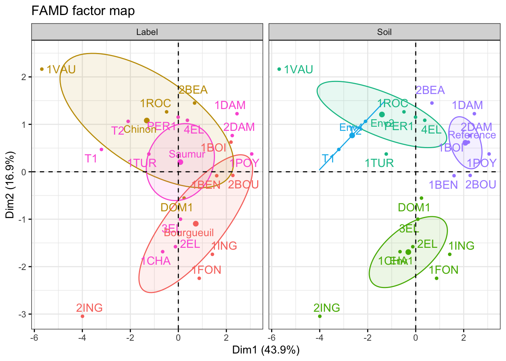
Alternatively, you can specify categorical variable indices:
fviz_ellipses(res.famd, 1:2, geom = "point")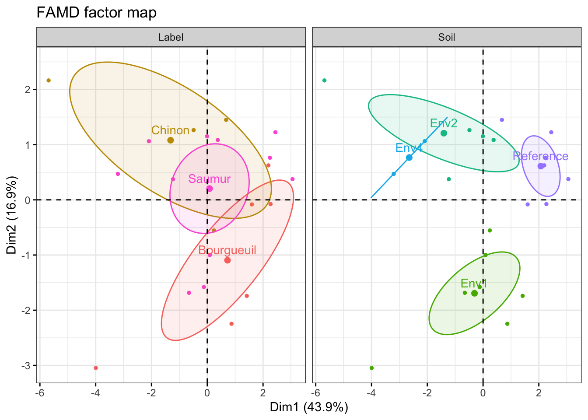
Summary
Factor Analysis of Mixed Data (FAMD) is a versatile tool for analyzing datasets with a mix of numerical and categorical variables. Through the ‘FactoMineR’ package in R, users can seamlessly perform FAMD, gaining valuable insights into the underlying structure of their data. By visualizing eigenvalues, variable contributions, and individual distributions, researchers can interpret complex relationships and make informed decisions based on the extracted factors. Incorporate FAMD into your analytical toolkit to unlock the full potential of mixed data analysis.
Citation
BibTeX citation:
@online{santos2023,
author = {Santos, Franklin},
title = {FAMD - {Factor} {Analysis} of {Mixed} {Data} in {R}},
date = {2023-11-29},
url = {https://franklinsantosm.com/posts/MDA},
langid = {en}
}
For attribution, please cite this work as:
Santos, Franklin. 2023. “FAMD - Factor Analysis of Mixed Data in
R.” November 29, 2023. https://franklinsantosm.com/posts/MDA.